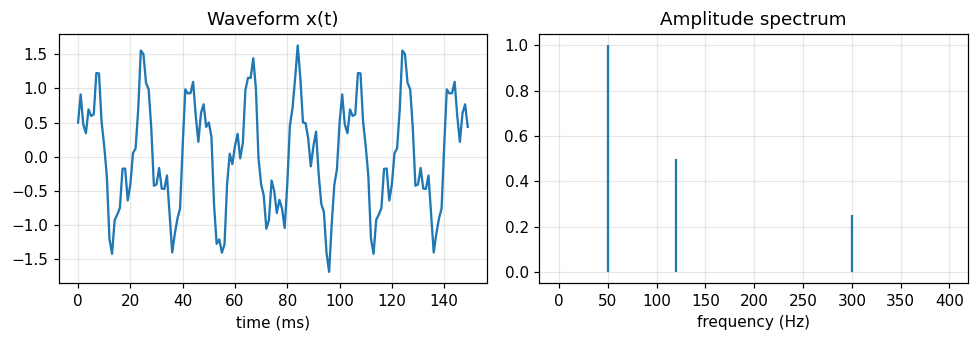
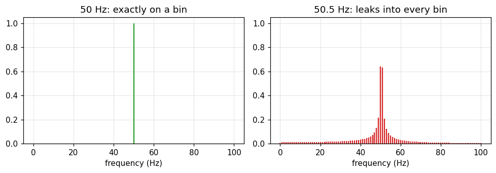
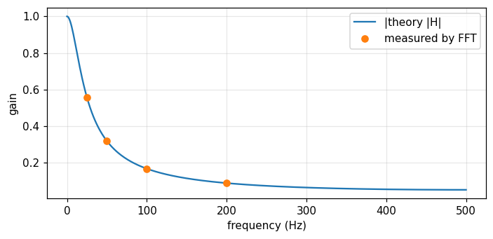
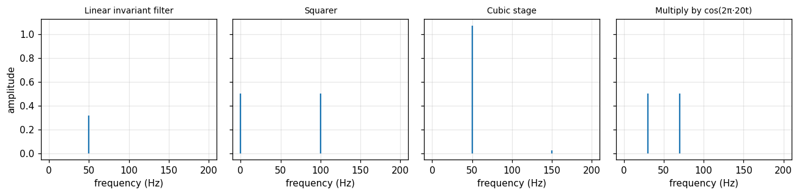

Explain the "change domain, then solve" idea behind every linear transform.
State the two conditions (linearity, time invariance) under which a harmonic input gives a harmonic output at the same frequency.
Read a spectrum from an FFT, know leakage and phase, and check it with a direct sum.
Recognise the symbols \Pi, \delta, \text{III} and the asterisk * used throughout the book.
Know where the two source books of this course (Bracewell and Barkat) meet.
Use the buttons, the dots or the ← → keys to move between slides.
PART 1/5
01
Transforms as a tool for linear problems
Situation: You are used to solving linear problems directly in the time or space domain.
Complication: Once the system has memory or the signal is complicated, the direct solution gets messy fast.
Resolution: Move to the transform domain, solve there, and transform back.
Three steps: transform, solve, invert
A numerical example: convolution becomes multiplication
Why Fourier comes before Laplace and Fourier series
1/5 · Transforms as a tool for linear problems
Change domain, solve, change back
Bracewell opens by saying that linear transforms named for Fourier and Laplace are techniques for solving problems in linear systems. The transform is a mathematical or physical tool that alters the problem into one that can be solved (p. 1).
Transform the problem to the frequency domain.
Solve there, usually with just multiplication and division.
Invert to get the answer in the original domain.
1/5 · Transforms as a tool for linear problems
The Fourier transform pair
Bracewell's system 1 (the 2\pi sits in the exponent)
Bracewell computes the serial product of \{2,2,3,3,4\} and \{1,1,2\} by hand on p. 32. The notebook does it two ways: the direct sum, and multiplying two FFTs then inverting. Both give the sequence 2 4 9 10 13 10 8.
Quick check
The sum of the terms of the serial product equals the product of the two sums: 14 times 4 equals 56.
1/5 · Transforms as a tool for linear problems
Fourier before Laplace
Going through Fourier first means that when the more general Laplace transform arrives later, many properties are already familiar. Only the new and essential question remains: the strip of convergence in the complex plane (p. 1).
In this course
Module 17 returns to Laplace. You then learn exactly one new idea instead of relearning the whole set of properties.
1/5 · Transforms as a tool for linear problems
One theorem, many physical embodiments
Bracewell notes that a concept familiar in one branch often appears in a different guise in another: the phase-contrast microscope is reminiscent of the circuit that detects frequency modulation, and both are explained by transforms along the same lines. A statistics problem may yield to an approach familiar from cascaded amplifiers (p. 1).
It is also why this course pairs Bracewell with Barkat: the same convolution appears in signal filtering and in the distribution of a sum of random variables.
1/5 · Transforms as a tool for linear problems
Reversing the traditional order
In traditional courses the Fourier transform shows up in the last lecture of a long course on Fourier series. Reverse the order and the series falls into place as an extreme case within transform theory, and its mathematical difficulties are tied to its non-physical extreme nature (p. 2).
Module 13 rebuilds the Fourier series from multiplication by the impulse train \text{III}.
1/5 · Transforms as a tool for linear problems
Same information in both domains: energy conservation
For a 1000-point test signal, the sum of squares in time is 123.1328 and \frac1N\sum|X_k|^2 in frequency is 123.1328. The two are equal (Rayleigh's theorem, module 6).
Why does the sum of the terms of a convolution equal the product of the two sums? (Hint: set s=0 in the transform of the convolution.)
If a signal has time-domain energy 123.1328, what must its frequency-domain energy be?
Why does Bracewell call the Fourier series an "extreme" case?
Hints: F(0)=\int f, so the transform of the convolution at s=0 equals F(0)G(0); the second answer is exactly 123.1328; the third: because an infinite periodic signal has no ordinary transform (module 2).
PART 2/5
02
Waveforms and spectra
Situation: We see a waveform on an oscilloscope and hear sound with our ears.
Complication: Is the "spectrum" just an abstract mathematical quantity?
Resolution: A waveform and its spectrum are Fourier transforms of each other, both measurable, and reading a spectrum needs a few conventions.
Three sinusoids and their spectrum
Two ways to compute a spectrum, resolution and leakage
Phase, frequency units and linearity of the spectrum
2/5 · Waveforms and spectra
Three sinusoids: reading the spectrum from an FFT
The test signal has 1.0 at 50 Hz, 0.5 at 120 Hz and 0.25 at 300 Hz. The FFT recovers the amplitudes 1, 0.5 and 0.25.

Figure 1. The waveform (left) looks complicated, but the spectrum (right) has just three lines at exactly 50, 120 and 300 Hz.
2/5 · Waveforms and spectra
The spectrum is something you can measure
An oscilloscope shows an electrical waveform, a spectrum analyzer shows electrical or optical spectra, and the ear hears spectra (Bracewell, p. 1).
Waveform: x(t), measured with an oscilloscope.
Spectrum: X(f), measured with a spectrum analyzer or by ear.
The two are Fourier transforms of each other, so they carry the same information.
2/5 · Waveforms and spectra
Two ways to compute a spectrum, one answer
Method A uses the FFT. Method B sums directly from the definition X_k=\sum_n x_ne^{-i2\pi kn/N} (Bracewell's "slow Fourier transform", chapter 7). They differ by at most 2.4e-14, i.e. they agree to rounding error.
A_kamplitude of the sinusoid at frequency k\,f_s/N
2/5 · Waveforms and spectra
Frequency resolution
Observing 1 second at 1000 Hz sampling gives 1000 samples and frequency bins spaced f_s/N=1 Hz apart. To separate two lines 0.5 Hz apart you must observe for at least 2 seconds.
Bin spacing
\Delta f=\frac{f_s}{N}=\frac{1}{T}
Tobservation time
f_ssampling rate
2/5 · Waveforms and spectra
Leakage: when the frequency falls between two bins
A 50.5 Hz wave analysed over 1 second falls on no bin. The amplitude at bin 50 is only 0.6397 (instead of 1), the prediction |\text{sinc}(0.5)| is 0.6366, and even at bin 80 there is still 0.0085.

Figure 2. The same unit-amplitude sinusoid: on a bin (left) we see one line, between two bins (right) the energy smears into neighbouring bins.
2/5 · Waveforms and spectra
Phase: how sin and cos differ
The amplitude spectrum does not tell \sin from \cos; the phase does. The FFT gives phase -90 degrees at bin 50 for the \sin and 0 degrees at bin 120 for the \cos.
Phase relation
\sin(2\pi f t)\leftrightarrow -90^\circ,\qquad \cos(2\pi f t)\leftrightarrow 0^\circ
2/5 · Waveforms and spectra
Frequency s is cycles per unit, not rad/s
The book keeps 2\pi in the exponent so s is the number of cycles per unit of x (pp. 6, 18). If another text uses \omega, convert with \omega=2\pi s.
The Fourier transform is linear: \mathcal F\{x_1+x_2\}=\mathcal F\{x_1\}+\mathcal F\{x_2\}. The notebook checks it with two signals; the largest deviation is 6.2e-14, of the order of rounding error.
Do not confuse
Linearity of the transform is different from linearity of a system. Part 3 separates the two.
PART 3/5
03
Linearity, invariance and convolution
Situation: An amplifier is specified by its frequency response, and a sinusoid in usually gives a sinusoid out.
Complication: When is that true, and when does it fail?
Resolution: It holds for linear, invariant systems; then the response is related to the stimulus by convolution.
The two conditions and a test filter
Impulse response and frequency response
Nonlinearity, time variation and harmonic distortion
3/5 · Linearity, invariance and convolution
Harmonic response to harmonic stimulus
The response of a system to harmonic input is itself harmonic, at the same frequency, under two conditions: linearity and time invariance (Bracewell, p. 3). That is why an amplifier is specified by its frequency response.
3/5 · Linearity, invariance and convolution
Two conditions merged into one: convolution
The two conditions can be restated as one: the response is relatable to the stimulus by convolution (p. 3).
The filter y[n]=a\,y[n-1]+(1-a)\,x[n] with a=0.9 has impulse response h[n]=(1-a)a^n. Direct convolution with h and the lfilter function give the same answer (largest deviation 8.2e-15), and the sum of h is 1, i.e. unit DC gain.
3/5 · Linearity, invariance and convolution
Test with a 50 Hz wave
Input at 50 Hz, sampled at 1000 Hz. The output frequency is 50 Hz. The measured gain is 0.3193, the theoretical gain 0.3193. The measured phase is -62.62 degrees, the theoretical -62.62 degrees (negative means the output lags).
Measured by FFT at 25, 50, 100 and 200 Hz, the gains are 0.5576, 0.3193, 0.1681 and 0.0893, matching the theoretical curve. A low-pass filter: the higher the frequency, the smaller the amplitude.

Figure 3. The theoretical curve of the low-pass filter and four FFT measurements (25, 50, 100, 200 Hz) lie on the same curve.
3/5 · Linearity, invariance and convolution
When the conditions fail, new frequencies appear
A 50 Hz wave through a squarer (nonlinear): DC component 0.5, a 100 Hz component of amplitude 0.5, and only 0 left at 50 Hz. Multiplied by \cos(2\pi\,20t) (linear but time-varying): two components at 30 Hz and 70 Hz with amplitudes 0.5 and 0.5.

Figure 4. Same 50 Hz input: the linear invariant system keeps the 50 Hz line; the squarer creates 0 and 100 Hz; the cubic stage creates a 150 Hz harmonic; the multiplier creates 30 and 70 Hz.
3/5 · Linearity, invariance and convolution
Harmonic distortion of an amplifier with a cubic term
The stage y=x+0.1x^3 driven at 50 Hz gives a fundamental 1.075 and a third harmonic at 150 Hz of 0.025. The total harmonic distortion \text{THD}=A_3/A_1 is 2.33%.
Linearity alone is not enough: the \cos(2\pi\,20t) multiplier is linear but time-varying, so it creates new frequencies.
Time invariance often survives when linearity fails, but space invariance is far less common: bridge deflection is not split into spatial sinusoids (p. 3).
When linearity fails (nonlinear servomechanism), harmonic analysis must be reconsidered (p. 3).
PART 4/5
04
Notation and generalized functions
Situation: Functions such as the rectangular pulse are usually defined piecewise, which is clumsy.
Complication: The impulse \delta(x) is not an ordinary function yet it is enormously useful.
Resolution: Use compact notation and treat any expression containing an impulse as the limit of a sequence of pulses of finite width.
Four core symbols and how to use them
The impulse as a limit: a table of numbers
Generalized functions and chapters 5 to 6
4/5 · Notation and generalized functions
Four symbols used throughout
Symbol
Name
Role
\Pi(x)
rectangle ("gate") function
multiplied onto a waveform to gate out a segment
\delta(x)
impulse symbol
impulse response, point load, point charge
\text{III}(x)
impulse train ("shah")
regular sampling and periodic functions
f*g
convolution
replaces an integral with a dummy variable by a compact symbol
4/5 · Notation and generalized functions
The rectangle is a "gate" function
The rectangular pulse is at least as simple as a Gaussian pulse, so Bracewell gives it its own name \Pi(x). The electronics term "gate function" suggests the use: multiply a waveform by \Pi(t) to open a valve for one segment (p. 2).
Example: the integral \int\Pi(x)\cos(\pi x)\,dx equals 0.6366, exactly 2/\pi.
4/5 · Notation and generalized functions
The asterisk replaces an integral with a dummy variable
Writing \Pi*f or \Pi(x)*f(x) for \int_{x-1/2}^{x+1/2}f(u)\,du is a small step, but the dummy variable and limits vanish and the running-mean character shows (p. 3). For f(u)=e^{-u^2} at x=0: numerical integration gives 0.9226, the formula \sqrt\pi\,\text{erf}(1/2) gives 0.9226.
4/5 · Notation and generalized functions
The impulse is a limit, not a function
The term "impulse symbol" reminds us that \delta(x) is not a function. An expression containing it has meaning as the limit of a sequence of pulses (not impulses) growing narrower and taller, and that limit often exists (p. 4).
Numerical test: the impulse "sifts" the value at the origin
With f=\cos x, the integral \int f\,\delta_\varepsilon\,dx approaches f(0)=1 as \varepsilon shrinks:
\varepsilon
\int f\,\delta_\varepsilon\,dx
0.5
0.9896
0.1
0.9996
0.01
1
This is the "sifting" property developed in chapter 5.
Figure 5. A sequence of unit-area rectangles: as the width ε shrinks the height 1/ε grows. The limit of the sequence is the impulse δ.
4/5 · Notation and generalized functions
Why it is called an impulse "symbol"
In physics, Green's functions and impulse responses can often be produced or observed within the resolving power of the equipment, while impulses themselves are fictitious. Familiar examples are the moment produced by a point mass on a beam and the electric field of a point charge (p. 4).
4/5 · Notation and generalized functions
The impulse train \text{III} (shah): sampling and periodicity
Shah is defined as \text{III}(x)=\sum_n\delta(x-n). Regular sampling (tabulation) is multiplication by shah, and periodic functions are convolutions with shah. Since shah is its own Fourier transform, it is twice as useful as might be expected (pp. 2 to 3).
Bracewell prefers the presentation through "generalized functions" following Temple and Lighthill (chapters 5 and 6). It retains both rigor and the direct procedures of manipulating \delta that have been so successful (p. 4).
In this course
Module 5 builds \delta and \text{III} in detail. Barkat also uses step and impulse functions in section 1.3.1 to write the density of a discrete random variable (module 10).
PART 5/5
05
Map of the two books and working numerically
Situation: You are about to cross 26 modules drawn from two books with different aims.
Complication: Without a map it is easy to get lost, and "transform" is easily mistaken for something you must always compute numerically.
Resolution: There is a route through parts A to E, you know where the two books meet, and a fixed routine for checking numbers.
Bracewell and Barkat: the two source books
Five parts, A to E
Thinking in transforms is not computing them
This course's routine for checking numbers
5/5 · Map of the two books and working numerically
The two source books
Bracewell
Barkat
Title
The Fourier Transform and Its Applications
Signal Detection and Estimation
Content chapters
19
12
Focus
transforms, convolution, sampling, spectra
probability, random processes, detection, estimation
Main language
deterministic functions
random variables and processes
5/5 · Map of the two books and working numerically
26 modules: 4 shared, 15 Bracewell only, 7 Barkat only
Each chapter is a module. Four pairs of chapters on the same topic are merged into one longer module (about 60 slides instead of 40):
Module
Bracewell
Barkat
Shared topic
10
16
1
probability through the characteristic function
12
17
3
random processes, noise, power spectrum
13
10
8
sampling, Fourier series, orthogonal expansions
14
11
4
DFT/FFT and discrete-time processes
5/5 · Map of the two books and working numerically
5/5 · Map of the two books and working numerically
Thinking in transforms is not computing them
Transform methods do not necessarily involve taking transforms numerically. Some of the best methods for linear problems do not apply the transform to the data at all, though their basis is clarified by appeal to the transform domain (p. 3).
For numerical work one normally prefers the answer as the convolution of two functions rather than as a Fourier transform (p. 3). That is why module 3 comes right before the theorems.
5/5 · Map of the two books and working numerically
This course's routine: two independent methods
Every number on the page is printed by the notebook, never typed by hand.
Each number is computed by at least two independent methods (for example FFT and direct sum, numerical integral and closed form), and the notebook stops if they disagree.
The Vietnamese and English editions use the same code and must print exactly the same numbers.
Examples from this very module: FFT and direct sum differ by 2.4e-14; the convolution filter and lfilter differ by 8.2e-15.
5/5 · Map of the two books and working numerically
How to study a module
Read the objectives and step through the slides in 5 parts. Use the slide list to jump.
Read the history, the case study and the formula sheet.
Open the notebook, run each cell, read the "Real output" note after it, then change the parameters yourself.
Take the quiz, read the explanations of wrong answers, and return to the matching slides.
5/5 · Map of the two books and working numerically
Notation and conventions of the book
Symbol
Meaning
x,\ s
original variable and frequency variable (cycles per unit)
f(x)\supset F(s)
a Fourier transform pair
\Pi,\ \Lambda
rectangle, triangle
H(x),\ \text{sgn}\,x
unit step, sign function
\text{sinc}\,x
\sin(\pi x)/(\pi x)
\delta,\ \text{III}
impulse, impulse train (shah)
*
convolution
5/5 · Map of the two books and working numerically
Self-check, part 5
Which chapters of Bracewell and Barkat are merged to teach random processes and noise?
Why does "thinking in transforms" not mean you must always compute an FFT?
If the FFT and the direct sum disagree by a lot, what do you do before trusting the number?
Hints: chapter 17 and chapter 3; because the answer sometimes comes out directly as a convolution; investigate the cause to the end.
SUMMARY
Takeaways
A transform is a tool: change domain, solve, change back.
A waveform and its spectrum carry the same information (energy is conserved), and both are measurable.
Reading a spectrum needs care with the resolution f_s/N, leakage and phase.
A harmonic input gives a harmonic output at the same frequency when the system is linear and invariant; the response is then a convolution.
\delta(x) is a limit of pulse sequences, not an ordinary function.
The course has 26 modules pairing two books, and every number is checked by two methods.
📜 Theory & historical background
Joseph Fourier lived from 21 March 1768 to 16 May 1830 (frontispiece). Lord Kelvin wrote that Fourier's theorem is not only one of the most beautiful results of modern analysis but also furnishes an indispensable instrument in the treatment of nearly every recondite question in modern physics (Bracewell's epigraph).
Ronald Bracewell was a professor of electrical engineering at Stanford who designed radio telescopes and used Fourier analysis in both instrument design and data processing, including tomographic imaging (author's note). That is why the book puts its weight on physical interpretation.
Bracewell also reports that the book began as a pictorial guide to transform pairs, and the commentary quickly outweighed the pictures in value (p. 2). You will use that pictorial dictionary (chapter 22) in many later modules.
🔎 Real-world case study
A distorting amplifier. An ideal amplifier is a linear system: a 50 Hz wave in gives only a 50 Hz wave out. If one stage has a square-law characteristic (a simple model of nonlinear distortion), the output spectrum shows a DC component 0.5 and a second harmonic at 100 Hz of amplitude 0.5, while the original 50 Hz component almost vanishes (0). With a cubic term y=x+0.1x^3 the spectrum has a third harmonic 0.025 and a THD of 2.33%. Looking at the spectrum alone tells you the system is nonlinear, without knowing the circuit inside.
This is how engineers measure distortion: feed in a clean sinusoid, read the output spectrum, and any line away from the input frequency signals nonlinearity or time variation.
🧮 Formula sheet for this module
Bracewell's system 1 (the 2\pi sits in the exponent)
Open the notebook and run the setup cell (NumPy, Matplotlib and SciPy are needed).
Task 1: build the three-sinusoid signal, compute the spectrum by FFT and by direct sum, and confirm they agree. Try 50.5 Hz to see leakage.
Task 2: check energy conservation and the serial product \{2,2,3,3,4\}*\{1,1,2\} two ways.
Task 3: pass a wave through a low-pass filter, compare the gain and phase measured by FFT with the formula, then try the squarer, the cubic stage and the cosine multiplier.
Task 4: check the sifting table of the impulse for \varepsilon=0.5,\ 0.1,\ 0.01, then try f=x^2+1 yourself and predict the result first.
The notebook generates its own data in code, so no external files are needed. Every number on this page is printed by the notebook and cross-checked with two independent methods.
⚠️ Common misreadings
"\sin t, the step and the impulse all have Fourier transforms."
Strictly speaking none of the three has one: the Fourier integral does not converge for all s (p. 8). They are not physically realizable and are used as convenient approximations. Module 2 handles them as "transforms in the limit".
"Linearity alone guarantees a sinusoid out for a sinusoid in."
Time invariance is needed too. The multiplier by \cos(2\pi\,20t) is linear but time-varying, and it turns a 50 Hz wave into two components, 0.5 at 30 Hz and 0.5 at 70 Hz.
"The FFT bin amplitude always equals the wave amplitude."
Only true when the frequency falls exactly on a bin. A 50.5 Hz wave gives 0.6397 instead of 1, and the spectrum leaks even into far bins.
"Harmonic analysis works for every physical system."
When linearity fails, as in a nonlinear servomechanism, the analysis into harmonic components must be reconsidered. Space invariance is also far less common, which is why bridge deflections are not studied by splitting the load into sinusoidal space components (p. 3).
✅ Self-check quiz
Click an answer to grade it immediately and read the explanation. Results are not saved.
References
R. N. Bracewell, The Fourier Transform and Its Applications, 3rd ed., McGraw-Hill, 2000, chapter 1 (pp. 1 to 4), chapter 2 (pp. 5 to 8), chapter 3 (pp. 24, 30 to 34) and epigraph.
M. Barkat, Signal Detection and Estimation, 2nd ed., Artech House, 2005, section 1.3.1 (step and impulse functions) and the table of contents of chapters 1 to 12.
The content was written with AI assistance (Claude) and then checked. Every number is produced by a Jupyter notebook and cross-checked by two independent methods; page citations come from the OCR text of the two source books. Mistakes may remain, so please report them.
R. N. Bracewell, The Fourier Transform and Its Applications, 3rd ed., McGraw-Hill, 2000.
M. Barkat, Signal Detection and Estimation, 2nd ed., Artech House, 2005.
This site only summarises, explains and checks numbers; please read the original books through a library or the publisher.
Contribute
Report errors, suggest modules or translations in the GitHub repository, and fork or clone it for your own study. Please credit the source when sharing.